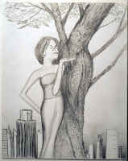

Rick Lott
Reflections on the Gold Coast
A kid down the pier jigs a string of silver hooks
for pilchard,
glittering fish which bait the oily tide, inexorable
and indifferent
to any power except the gold doubloon that hangs
in the night, flattened
by a cloud bank that menaces this coast like a heavy
in a baggy suit.
Lights stain the water like reflections in mirrored lenses,
shattered
by waves bearing their freight of salt and debris ceaselessly
shoreward.
And the fishermen who flock the rails feel the pull
of that old cadence,
the hope swimming in the black current.
The man with hands battered from digging jammed boulders
out of a crusher
leans on the rail and waits for line to sing off the reel,
for rod
to tap its code on wood. A radio chatters Spanish
from Havana,
home to someone on the pier, but for him home is
the dirt
under his nails, the past a shadow at the limit of his
vision:
a fat woman falls from her pew and rolls in the aisle,
raving in unknown
tongues, her massive arms quivering, and the firefly
glow
of cigarettes flickers beyond doors open to the heat,
where he
and his uncle pace and smoke in the green evening,
this memory crossing
a distance as vast as that of the starlight that spends
itself on the sand.
Shadows prowl the beach, shapes gliding in the deeps,
and only
the foolhardy go there at night, but he remembers a secretary
sprawled on rumpled sand.
Pale and heat-hungry as the snow-choked streets she flew from,
she opened to him
as though trying to draw the night and the moonstruck sea
into her.
A wind from Africa sniffs his throat.
His line bellies in the breeze, current tumbling
the lead pyramid
along the bottom, and he tightens the line until the rodtip
flexes like a rapier.
On the dark sea, the lights of ships glow like clock digits,
and somewhere
on the sea floor, wooden ribs curve from silt that inters
the gold forever
fled from lightless hands, reclaimed only in desire vast
as the sigh
that rustles palm fronds and inflates the shirts of fishermen.
|

(Caleb Everly) |
{kind=link}